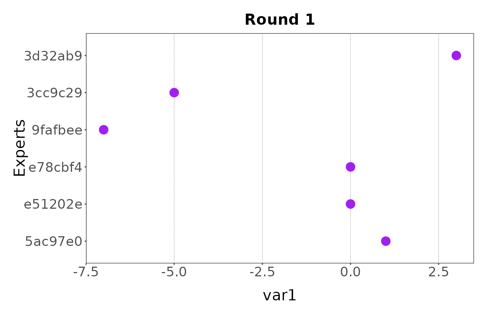

![[Experimental]](figures/lifecycle-experimental.svg)
elic_cont_plot() plots elicitation data for a specific round and variable.
Usage
elic_cont_plot(
x,
round,
var,
...,
scale_conf = 100,
group = FALSE,
truth = NULL,
colour = "purple",
group_colour = "orange",
truth_colour = "red",
point_size = 4,
line_width = 1.5,
title = paste("Round", round),
xlab = var,
ylab = "Experts",
family = "sans",
theme = NULL,
verbose = TRUE
)Arguments
- x
an object of class elic_cont.
- round
integer indicating if the data belongs to the first or second elicitation round.
- var
character string, the variable to be plotted.
- ...
Unused arguments, included only for future extensions of the function.
- scale_conf
numeric, the scale factor for the confidence interval.
- group
logical, whether to plot the group mean.
- truth
list, the true value of the variable, see Details for more.
- colour
character string, the colour of estimated values.
- group_colour
character string, the colour of the group mean.
- truth_colour
character string, the colour of the true value.
- point_size
numeric, the size of the points.
- line_width
numeric, the width of the lines.
- title
character, the title of the plot.
- xlab
character, the title of the x axis.
- ylab
character, the title of the y axis.
- family
character, the font family.
- theme
a
themefunction to overwrite the default theme.- verbose
logical, if
TRUEit prints informative messages.
Value
Invisibly a ggplot object.
Details
The truth argument is useful when the elicitation process is part of a
workshop and is used for demonstration. In this case the true value is known
and can be added to the plot. This argument must be a list with the following
elements: min, max, best, and conf. When var refers to a
one point elicitation estimate, only the best element is required. When
var refers to a three points elicitation.estimate, the min and max
elements are also required. Finally, when var refers to a
four points elicitation estimate, the conf element is also required. The
conf element is used to rescale the min and max values.
If a theme is provided, the family argument is ignored.
scale_conf
If the variable plotted is the result of a four points elicitation where
expert confidence is provided, the minimum and maximum values provided by
each expert are rescaled using their provided confidence levels. Users can
choose how they want to rescale minimum and maximum values by providing a
value for the scale_conf argument. If no argument is provided, a default
value of 100 is used for scale_conf.
The scaled minimum and maximum values are obtained with:
\(minimum = best\ guess - (best\ guess - minimum)\frac{scale\_conf} {confidence}\)
\(maximum = best\ guess + (maximum - best\ guess) \frac{scale\_conf} {confidence}\)
Examples
# Create the elict object and add data for the first and second round from a
# data.frame.
my_elicit <- elic_cont_start(var_names = c("var1", "var2", "var3"),
var_types = "ZNp",
elic_types = "134",
experts = 6) |>
elic_cont_add_data(x, data_source = round_1, round = 1) |>
elic_cont_add_data(data_source = round_2, round = 2)
#> ✔ <elic_cont> object for "Elicitation" correctly initialised
#> ✔ Data added to "Round 1" from "data.frame"
#> ✔ Data added to "Round 2" from "data.frame"
# Plot the elicitation data for the first round and the variable var1 (only
# the best estimate)
elic_cont_plot(my_elicit, round = 1, var = "var1")

# Plot the elicitation data for the first round and the variable var2 (best
# estimate with min and max errors)
elic_cont_plot(my_elicit, round = 1, var = "var2")
# Plot the elicitation data for the first round and the variable var3 (best
# estimate with min and max errors rescaled to the confidence value)
elic_cont_plot(my_elicit, round = 1, var = "var3")
#> Warning: ! Some values have been constrained to be between 0 and 1.
#> ✔ Rescaled min and max
# Add the group mean
elic_cont_plot(my_elicit, round = 1, var = "var3", group = TRUE)
#> Warning: ! Some values have been constrained to be between 0 and 1.
#> ✔ Rescaled min and max
# Add the true value
elic_cont_plot(my_elicit, round = 1, var = "var3",
truth = list(min = 0.6, max = 0.85, best = 0.75, conf = 100))
#> Warning: ! Some values have been constrained to be between 0 and 1.
#> ✔ Rescaled min and max
# Overwrite the default theme
elic_cont_plot(my_elicit, round = 1, var = "var3",
theme = ggplot2::theme_classic())
#> Warning: ! Some values have been constrained to be between 0 and 1.
#> ✔ Rescaled min and max